Flaclify
Flaclify is Euphonica, the GTK4 and libadwaita client for the Music Player Daemon, forked so it can be installed beside the original and taught to change its clothes. A theme is one CSS file with a short header. It can recolour the window, square or round every corner, swap the typefaces, bring its own icon set and album-art plate, and decide whether album art is allowed to tint the accent or wash the background. Themes apply while the music plays: from the menu, with Ctrl+T, from gsettings, or by saving a file.
Seven looks ship. Two of them, Broadsheet and Reversed Spine, are directions 1a and 1b of the Euphonica × Moirai Digital canvas, drawn in the Death to the World design language. The rest exist to prove the range: a paper folio, a phosphor terminal, a neon room, a Bauhaus poster.
The bundled themes
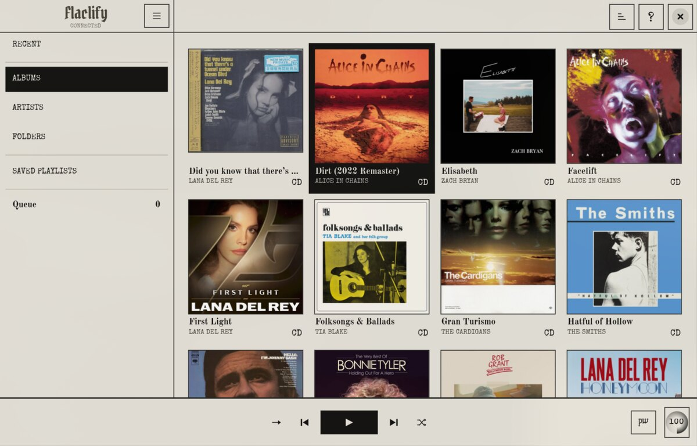
Toner on paper. Typewriter labels, Old Standard titles, a blackletter masthead, one-pixel line-ink rules, no rounding. Red is one gesture, held to the seekbar. Typewriter glyph icons.
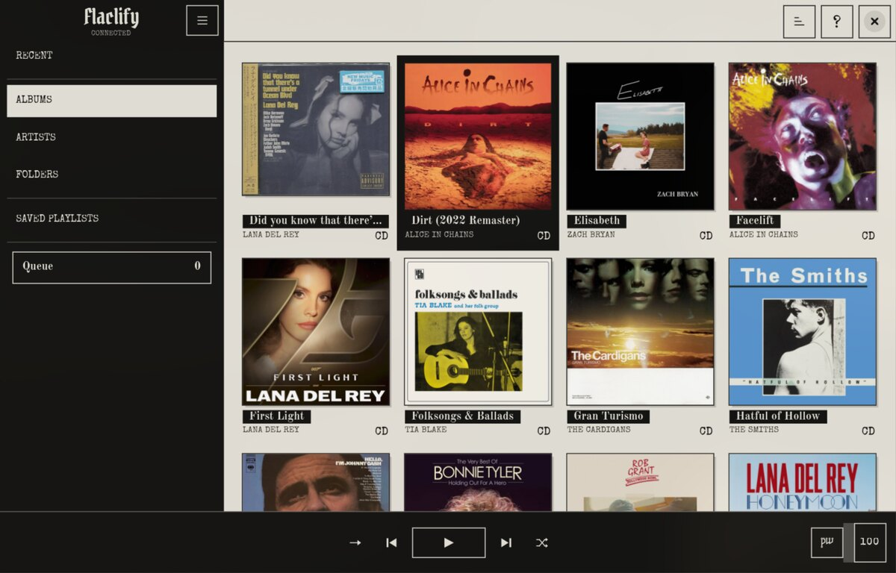
Imports Broadsheet and reverses the spine: a toner sidebar with paper knocked out of it, the current view reversed back to paper, a black transport band, titles set in inline toner chips.
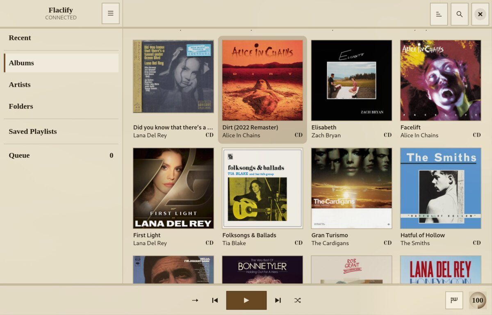
Laid paper, engraver's ink, a little gilt. Serif throughout, square plates, double rules for the masthead and the transport. Hairline icons with round terminals.
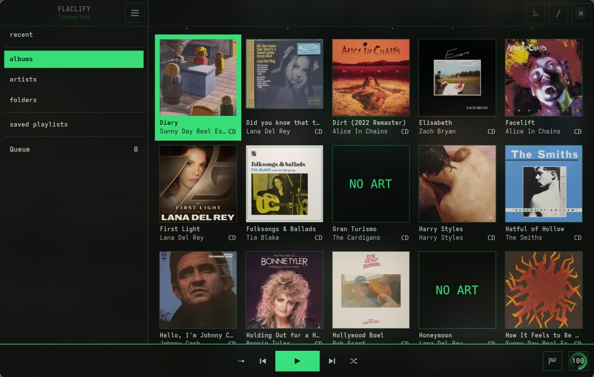
Phosphor on black. Monospace, one-pixel rules, hover and selection invert instead of tinting. Icons are ASCII wherever ASCII reads: < > + - / x * ♪ @.
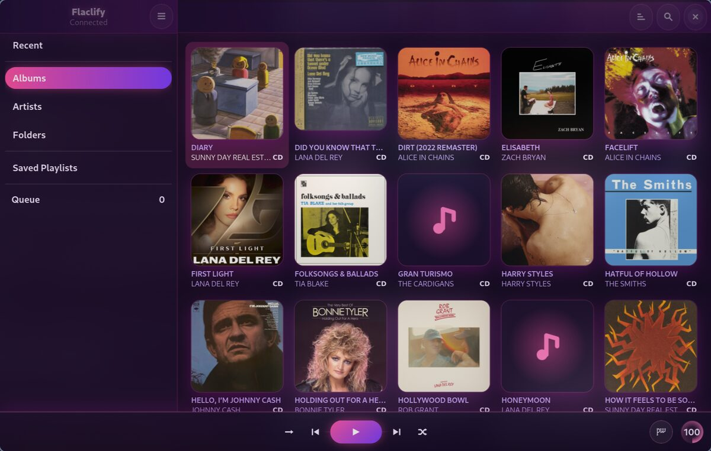
Violet ground, magenta and cyan light, pill buttons and glow. The one theme that lets album art take the accent, so the glow follows the cover.
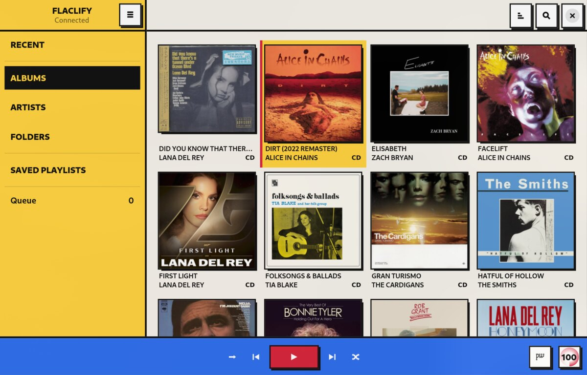
Off-white, primary blocks, two-pixel black rules and hard offset shadows. Icons are solid geometry; the placeholder is a black disc, a red square and a yellow bar.
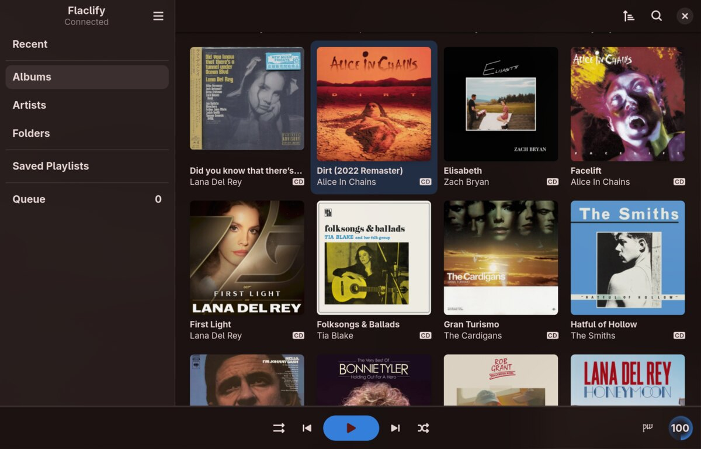
Euphonica as it ships: libadwaita's own palette, the blurred album-art wash, accents lifted from the cover. Kept as the baseline every theme is measured against.
Making a theme
Drop a file into ~/.config/flaclify/themes/. The directory is watched, so the theme appears under Custom and every save re-applies it. The full guideline, with the selector table and the developer notes, is docs/THEMING.md in the repository. What follows is the part you must not skip.
Anatomy
/* @name: Midnight
* @scheme: dark
* @auto-accent: off
* @art-background: off
* @icons: terminal
*/
:root {
--window-bg-color: #101418;
--window-fg-color: #e6edf3;
--accent-bg-color: #6fb3ff;
--accent-fg-color: #08111c;
}
window { font-family: "Inter", sans-serif; }
button { border-radius: 0; }| Key | Values | Does |
|---|---|---|
@name | text | Menu label. Defaults to the file stem. |
@scheme | light dark follow | Forces the colour scheme. Set it whenever the palette is hard-coded. |
@auto-accent | off on | off keeps album art and the system accent from overriding yours. |
@art-background | off on | off hides the blurred album-art wash without touching the user's setting. |
@icons | set name | A bundled icon set, searched before the stock icons; also supplies the placeholder plate. |
A theme may build on a bundled one: @import url("resource:///io/github/h3303/Flaclify/themes/broadsheet.css"); and then override only what differs. That is how Reversed Spine is made.
Rules of the hand
- Own every variable you rely on. Set the libadwaita colours on
:root: window, view, headerbar, sidebar, card, popover, dialog, accent, border and shade. Give each*-shade-colora translucent version of its pane; that is what shows through the album-art wash. - Never track an ellipsizing label. GTK measures ellipsized labels without their
letter-spacing, so tracked text gets cut short. Sidebar labels, cell captions, window titles and the player bar all ellipsize. Tracking is safe on buttons, tooltips and toasts. - Reversed states set their own colours. Captions carry their own ink; inside a checked button or a selected row they inherit nothing and vanish. End the theme with a contrast block for
:checked,:activeand:selected. - Scope the masthead to
.light-right-edge. The queue's "Now Playing" pane is also a.sidebar-paneand will take the blackletter if you let it. - One vertical rule, two equal headers. If you draw rules, silence libadwaita's inset sidebar line and the pane border, let the page edge draw the divider, and pin both header bars to measured heights so the rules cross once.
- Long-form text has its own font. Wikis and bios use libadwaita's document style; set
--document-font-familyor they stay in the system face.
Before you ship
- Checked nav, selected album, selected queue row, active toggle: all readable.
- Album-art wash on and off both look intentional.
- Popovers, tooltips, toasts, preferences and the queue view checked, not only the grid.
- Header rules meet the divider in a single cross.
Icons and plates
Each theme names an icon set. The set is searched ahead of the stock icons while the theme is active, so a theme can differ in concept and not only in weight: the broadsheet sets use real Special Elite glyphs, Terminal uses ASCII, Bauhaus fills its shapes. Every set is generated from one geometry spec per icon by tools/gen_icons.py, rendered as fill-only paths so GTK's symbolic recolouring always applies. Each set also ships a 512-pixel album-art plate in its own idiom, and the artist avatar becomes a themed mark on a themed plate instead of a random-colour initial.
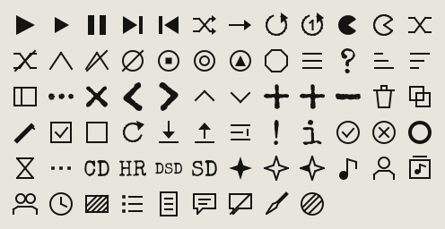
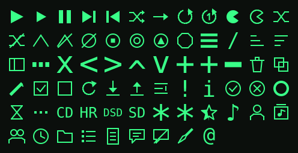
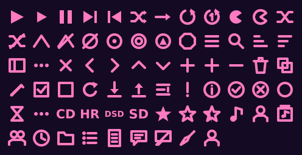
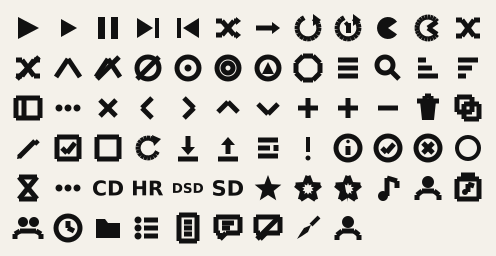
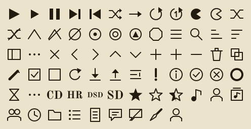
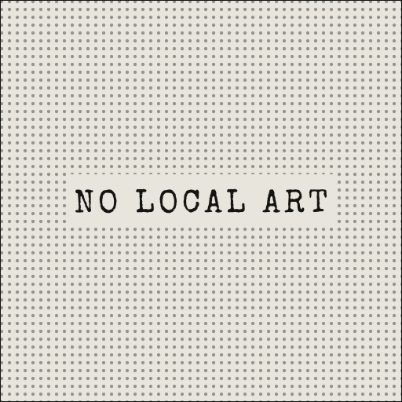
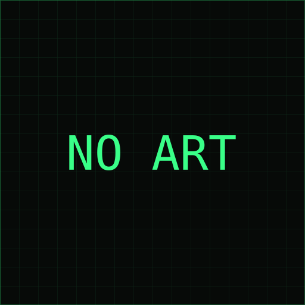
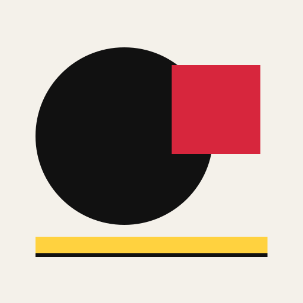
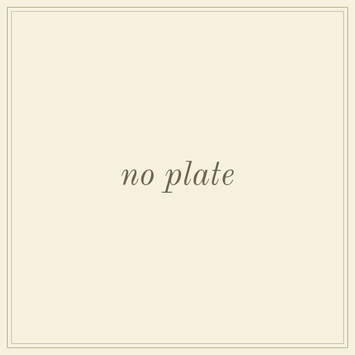
For developers
The engine
src/theme/mod.rs owns one CssProvider at user priority, installed from the app's startup handler before any window exists. The window's accent provider is added later at the same priority, so it cascades over the theme; that is what lets album-art accents win when a theme allows them.
apply(id) loads the CSS, switches the icon set, forces the colour scheme if declared, saves the id and notifies listeners. The window refreshes its accent provider and re-evaluates the album-art wash; the application keeps the stateful app.theme action in step so the menu's radio mark follows whatever changed the theme. The user directory is watched with a debounced GFileMonitor; the settings key is watched so gsettings writes apply live.
Icon sets
apply_icon_set() puts /iconsets/<set>/icons first in the display's icon-theme resource path. Names that Adwaita also provides carry an fl- prefix in the UI files, because the system theme is searched before app resources and an unprefixed override is never picked. Placeholders go through a ThemedPlaceholder paintable that swaps its texture and invalidates itself, so cells already showing one repaint on their own.
Build and run
meson setup build -Dprofile=dev -Dprefix=$HOME/.local
ninja -C build install
flaclifyThe app ID is io.github.h3303.Flaclify with its own settings, cache and config, so it does not interfere with a system Euphonica. The one thing deliberately shared is the MPD password in the keyring, and the MPD sticker keys, so metadata still round-trips with other Euphonica clients.
Adding a bundled theme
src/themes/<stem>.csswith the header keys.- A
<file>entry in the/themes/block ofsrc/flaclify.gresource.xml. - Own icons: a new style in
gen_icons.py, regenerate,@icons: <style>. - Rebuild and walk the checklist with the album-art wash on and off.
python3 -m venv build/venv && build/venv/bin/pip install fonttools
build/venv/bin/python tools/gen_icons.pyScreenshots beat trusting CSS. Views can be switched from outside the app over D-Bus (org.gtk.Actions.Activate view-albums on the window object) so a script can walk every theme through every view.
Files beside the music, and flacli
What the player reads
A bio under each artist and a wiki under each album, and most libraries have neither. Before asking Last.fm or MusicBrainz, Flaclify looks next to the files: <Artist>/artist.md (or .wiki/<Artist>.md for an artist without a folder), <Artist>/<Album>/wiki.md, and <Artist>/artist.jpg for the picture. A text file is optional front matter between --- rules (attribution and url are used) and plain prose below.
The file is handed to the provider chain as the starting document, so a refresh keeps its text and only fills in tags and images from the providers you have enabled. It is read again whenever it is newer than the cached copy, so an edit on disk shows on the next visit. The switch and the music directory are under Preferences → Integrations → Library files; the directory defaults to the XDG music folder.
flacli
flacli is the other half: a command line any agent can drive that fetches named songs, albums or whole playlists and files them as Artist/Album/NN - Title. It writes exactly the files above (flacli wiki, flacli avatar), asks MPD to rescan just the folders it filed downloads into, and stores each synced playlist in MPD by name. What an agent fetches is in this window, with its bio and its playlist, without a rescan and without anything written into the player's database.
What comes next lives in the player rather than the shell and is set out in the roadmap below: an indicator for downloads under way, ghost rows for the tracks a playlist still lacks, the releases an artist page could fetch, and the review of doubtful matches as a dialog instead of a JSON field.
The roadmap
Flaclify and flacli are one stack. The shell fetches and files; the player shows. What remains is laid out in tiers: first the player reflects what the shell has done, then it drives the shell, then, if ever, a model sits inside the player, and last the whole stack leaves the desk for a device in the pocket. Each tier is a label on the issue tracker and every line below is an issue, so the boxes here follow the tracker and not the other way round. No dates are promised.
-
Tier 0
Files and playlists arrive on their own
Nothing written into the player's database; the player reads what the shell leaves beside the music.
Done- MPD rescans only the folders flacli filed downloads into.
- Each synced playlist is stored in MPD under its own name.
- Bios, wikis and artist pictures kept beside the music are read by the player.
-
Tier 1
Flaclify reads flacli state
Read-only surfaces fed by
flacli --compact status, the JSON contract the shell already keeps for agents. Polled only while a job is running.flacli side: a stable status summary for players · one installer for the whole stack
- Gate every flacli feature on the MPD library being the one flacli files into, and on
flaclibeing on the path with the Nicotine+ bridge reachable.№ 8 - An incoming indicator: per playlist, the job state and the counts that matter, downloading, done, candidates awaiting review.№ 1
- Ghost rows in a synced playlist for the tracks it still lacks, greyed, in their original positions, with the reason.№ 2
- Under an artist's discography, the releases MusicBrainz knows and the library does not.№ 3
- Gate every flacli feature on the MPD library being the one flacli files into, and on
-
Tier 2
Flaclify drives flacli
The first write actions from the player into the shell. The shell's rules hold: naming the music is the yes, a playlist is never queued until the totals have been seen, and Soulseek code stays out of this repository.
flacli side:
flacli serve, a session D-Bus interface with signals- "Get this" on a missing release, and "Search Soulseek" when a library search returns nothing.№ 4
- Import a playlist from TIDAL, Deezer or YouTube Music from the playlist view: sync in the background, show the totals, queue on the yes.№ 5
- Review doubtful matches as a dialog, approve or skip per track, with the why the shell already computes.№ 6
- Transport: spawn the CLI and parse its JSON first; move to D-Bus when polling gets clumsy or Flatpak needs it.№ 7
-
Tier 3
An agent inside the player
Optional, and opened only once Tiers 1 and 2 are in. Claude Code with the flacli plugin, or any MCP client, already is this agent; the cheaper version of "all in one" is the player reflecting state well.
- A chat pane where a model drives flacli from inside Flaclify, with
flacli guideas its instructions. Claude through the API or a local model through Ollama; pluggable, off by default.№ 9
- A chat pane where a model drives flacli from inside Flaclify, with
-
Tier 4
One device
The stack off the desk. A digital audio player that carries MPD, a Nicotine+ core with the bridge, and flacli, so a device in a pocket fetches, files and plays with no service behind it. Adapt a player that boots Linux, or build one from a board, a DAC and a battery. Nothing hosted, nothing bought from anyone, nothing that phones home.
flacli side: a headless Nicotine+ runtime, aarch64
- The hardware: an existing player that boots a Linux we can install, against a board build with a DAC HAT, a battery and a small touch display. Decided by whether it runs Python, a headless Nicotine+ core and MPD; a written comparison and one chosen target.№ 10
- The device image from one script: MPD, the headless core with the bridge,
flacli serveas a service, the front end on login. The device's storage is the library, synced both ways with the desktop over the LAN, sidecar files included.№ 11 - Flaclify on the device's own screen, in a compact layout for a small touch display; a leaner front end only if GTK proves too heavy for the chosen board.№ 12
The live list, with discussion, is label:roadmap on GitHub.